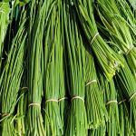
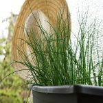

부추
수선화과의 부추아과에 속하는 여러해살이풀이다. 정구지(경상도, 충청북도 사투리), 졸(충청남도 사투리) 혹은 솔(전라도 사투리)이라는 사투리로도 불린다. 잎은 길고, 꽃은 흰색으로 피며 열매는 삭과이다. 김치로 만들거나, 부침개로 지져 먹고, 각종 양념에 첨가해서 먹기도 한다. 부추는 잎을 식용으로 하는 여러해살이 식물로서 종자번식과 뿌리번식이 가능한 것이 특징이다. 땅 속에 짧은 뿌리줄기가 있고 많은 비늘줄기를 만들어서 포기 모양이 된다. 잎은 각 비늘줄기에 여러 장이 붙어 있고 길이 15-20cm, 폭 3-10mm이다. 잎은 편평하고 등쪽에 모서리가 있으며 잎끝은 둥글다. 짙은 녹색이고 부드러우며, 특유의 냄새가 난다. 잎집은 3-6cm이며, 여름에 40-70cm의 줄기를 내고 줄기 끝에 흰꽃이 20-40개 핀다. 꽃은 작고 6장의 꽃덮이조각으로 되어 있다. 가을에 열매를 맺으며 종자는 검고 깨알만 하다. 포기나누기나 종자를 심어 재배하는데 추위·더위에 강하고, 어느 정도 자라면 포기나누기로 증식한다. 서리를 맞으면 지상부분은 시들어버리지만 지하부분은 월동(휴면상태)한다. 잎은 낫으로 베어 수확한다. 재생력이 강하기 때문에 1년에 5회 이상도 수확이 가능하다. 최근에는 수요가 늘어남에 따라 비닐하우스 시설재배를 통하여 겨울에도 재배하여 수확하고, 또 이른봄에 출하하기 위해 촉성재배도 한다. 이 밖에 포기에 흙을 덮거나 프레임 속에서 차광하여 연화재배도 하고 있다.
재배시기는 지역에 따라 4월에서부터 11월 노지재배가 가능하다. 부추 모종을 포트에 키워 이식하는 것이 가장 안전하고 좋은 방법이지만, 비용의 절감을 위해 직파하는 경우도 흔하다. 우리나라에서는 그린벨트 품종을 가장선호한다. 4월에 파종할 경우 9월~10월에 수확이 가능하지만 첫해에는 수확량이 저조하기 때문에 첫해는 수확을 하지 않고 겨울동안 휴면을 시킨다. 휴면을 거친 부추를 다음해 3월~4월에 묵초를 제거하고 웃거름을 뿌려주고 난 후에 관수를 한다. 25일~30일 정도가 지나면 고품질의 초벌부추의 수확할 수 있다. 이후 적정량의 관수만을 통해 두벌, 세벌, 네벌까지도 수확이 가능하다. 많은 수확량을 원하지 않는다면 한번 파종으로 아주 오랜기간 수확이 가능하다.
부추는 숙근다년초(宿根多年草)로서 지하경으로 번식하며 잎은 직생 편평하고 엽편과 엽초로 구성되어 있으며 모두 식용으로 활용할 수 있다. 한포기의 잎수는 5∼11개이며 잎은 총생하는데 가늘고 길며 납작하다. 엽폭 5∼6 mm, 길이 20∼24cm 정도로 가늘고 길며 두껍다. 엽색은 선록색(鮮綠色)을 띄며 독특하고 강한 냄새가 있다.
부추는 생육중에 생장점에 가까운 상위엽초의 엽액에서 분얼을 하며 분얼이 잘 될수록 엽초가 점차 튼튼해지고 잎수가 많아진다.(2∼4년생 수량이 가장 많음) 뿌리는 호선상(방패모양) 수염뿌리이며 20∼30cm부근에 분포하고 영양분을 저장하는 능력이 우수하다. 한포기당 부추뿌리는 10∼15개이며 뿌리의 수명은 1∼2년, 3년부터 새뿌리가 반복 발생되어 10∼20년까지 재배가 가능하나 다수확을 목표로 할 경우에는 2∼4년마다 교체하는 것이 유리하다.
꽃은 산형화서로 화경이 정단에서 자라며 1개의 주머니에는 20∼30개의 작은 백색의 꽂이 있으며 타가수분을 한다. 종자는 종피가 가늘고 쭈글쭈글한 무늬가 있으며 단단하고 두터워 발아가 늦다. 번식은 분주와 실생 모두 용이하고 염색체수는 2n=16, 32 이다. 부추의 생육적온은 18∼20℃로서 저온성 작물이며 5℃이하에서는 생육이 정지되고 25℃ 이상에서는 생육이 부진하고 섬유질이 많이 생긴다.
토질은 특별히 가리지 않으나 지력이 좋고 배수 양호한 양토 또는 사양토로서 pH 6.0∼7.0의 조건에서 가장 생육이 왕성하다. 부추는 통상 4월 중.하순에 파종하여 여름내내 시비와 제초를 하면 파종 당해에는 겨울서리를 맞아 잎이 말라 죽게되고 뿌리만 생육이 지속된다. 이때 잎을 베어내고 하우스를 씌워 다시 재배관리를 하면 조생종은 11월부터, 만생종은 이듬해 1월부터 출하가 시작되어 약 6개월에 걸쳐 같은 뿌리에서 4∼5차례 수확하게 되며 한번 파종을 하면 5년동안 수확이 가능하다. 수확은 땅 위 녹색잎 부분만 채취하기도 하고 땅속 흰색 연화부위까지 채취하기도 하는데, 포항지방에서는 전자를 `막부추′, 후자를 `호부추′라 부른다. 호부추는 막부추에 비해 고급품으로 취급되고 일본에 일부 수출도 한다.
출처 본문 : 농사로 이미지: 구글 이미지
Table(s)
| 계절 | 파종기 | 수확기 |
|---|---|---|
| 봄베기 | 3월 중∼4월 상 | 4월∼6월 |
| 여름베기 | 8월 중∼9월 상 | 7월∼8월 |
| 겨울베기 | 9월∼10월 |